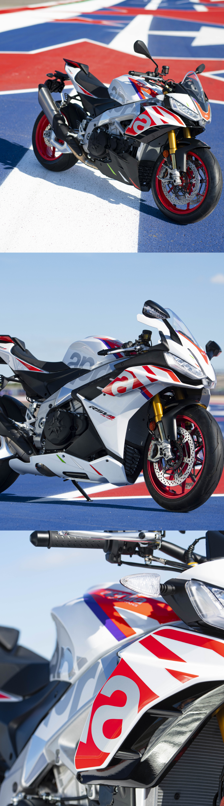

Эти мотоциклы прославились своей знаменитой 65-градусной платформой V4, основанной на опыте побед в чемпионатах мира по супербайку, теперь в новой ограниченной серии. Новые модели являются результатом кропотливых усилий в области прикладной аэродинамики. Значительное время, проведенное в аэродинамической трубе, привело к созданию ультрасовременной формы и эстетического вида с чрезвычайно низким аэродинамическим сопротивлением. Этот продуманный дизайн обеспечивает значительные преимущества в производительности на высоких скоростях благодаря увеличению давления в воздушной камере и прижимной силы. Наряду с аэродинамикой, новые заводские модели V4 обладают совершенно новой и улучшенной эргономикой для максимального комфорта водителя. Новые топливные баки и седло позволяют водителю идеально вписаться в обтекатели, сохраняя при этом комфортность пространства для более естественного и расслабленного положения при езде.Обновленный двигатель V4 объемом 1099 куб.см от RSV4 Factory мощнее, чем когда-либо, и является самым мощным из когда-либо созданных Aprilia, с невероятными показателями: 217 лошадиных сил, в то время как двигатель Tuono V4, отличающийся по конструкции, выдает впечатляющие 175 лошадиных сил благодаря 1077 куб.см V4. Обе модели оснащены новым шестиосевым блоком управления Marelli, дроссельной заслонкой с полным приводом и усовершенствованной операционной системой APRC. Наряду с многоуровневым управлением торможения двигателем, обе заводские модели оснащены шестью режимами езды: три для трека и три для дороги (три из которых являются настраиваемыми пользователем режимами). Эти режимы езды позволяют одним нажатием кнопки откалибровать наиболее подходящие настройки для контроля тяги, управления рулем, торможения двигателем и ABS. Как RSV4 Factory, так и Tuono V4 Factory оснащены колесными дисками из кованого алюминия, полуактивной подвеской Ohlins Smart EC 2.0 и тормозами Brembo Stylema.RSV4 и Tuono V4 выделяются благодаря тройной светодиодной передней фаре с подсветкой DRL по периметру, которая демонстрирует фирменный внешний вид спортбайка Aprilia. Также в комплект поставки входят поворотные огни Aprilia, у которых предусмотрена интересная функция, фара позволяет улучшить видимость при повороте за счет использования дополнительных огней для освещения внутренней части поворота. Цены на заводские модели special edition V4 немного выросли: надбавка составит 500 долларов США.
СТАТЬЯ ВЫПУЩЕНА 07.12.2023